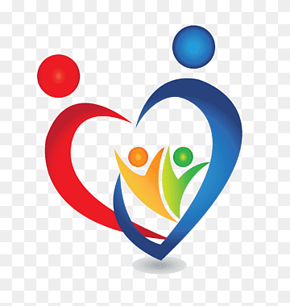
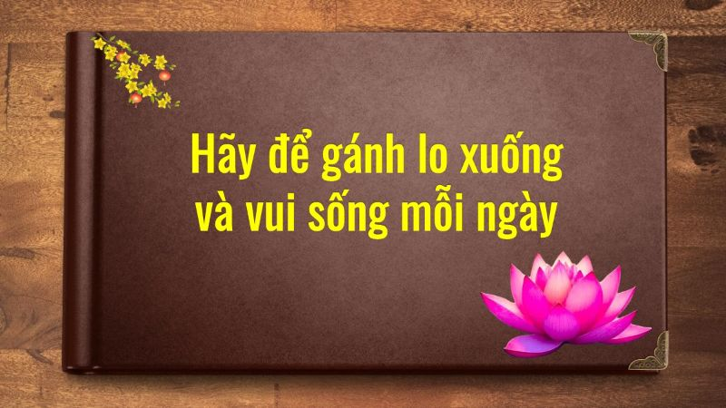

HẠNH PHÚC
.jpg)
.jpg)
.jpg)

Ý nghĩa của Hạnh phúcHạnh phúc là mục tiêu chung của mỗi con người và của toàn xã hội. Các nghiên cứu quốc tế cho thấy hạnh phúc không chỉ phụ thuộc vào điều kiện kinh tế mà còn gắn với sức khỏe, sự gắn kết gia đình, niềm tin xã hội và môi trường sống.
Trong truyền thống văn hóa Việt Nam, hạnh phúc thường được thể hiện qua những giá trị giản dị nhưng bền vững: gia đình hòa thuận, cuộc sống bình yên, lao động cần cù và tinh thần lạc quan.
Hạnh phúc đôi khi không phải là điều gì quá lớn lao. Đó có thể chỉ là một buổi sáng thức dậy với cơ thể khỏe mạnh, một bữa cơm gia đình ấm áp, hay một lời hỏi thăm chân thành từ người thân, bạn bè. Trong nhịp sống hiện đại, con người dễ mải miết chạy theo công việc, thành công và những mục tiêu lớn mà quên mất rằng hạnh phúc luôn hiện hữu trong những điều bình dị hằng ngày. Biết trân trọng những gì đang có, giữ cho tâm trí bình an và dành thời gian cho gia đình – đó chính là nền tảng của một cuộc sống hạnh phúc bền vững. Hạnh phúc không phải là đích đến xa xôi, mà là hành trình sống tích cực mỗi ngày.
Bài viết nổi bật
❤️ Hạnh phúc là gì?
🌱 Hạnh phúc không phải là có nhiều, mà là biết đủ; không phải là đi tìm, mà là biết nhận ra. Khi con người biết dừng lại một chút, cúi xuống nhìn cuộc đời bằng ánh mắt dịu dàng hơn, thì hạnh phúc – hóa ra – vẫn luôn ở đó, bình dị như bát cơm nóng, như tiếng gọi thân quen, như một ngày bình thường trôi qua trong yên ổn.
❤️ Hạnh phúc luôn ở bên ta
🌱 Hạnh phúc, suy cho cùng, không ồn ào, không phô trương. Hạnh phúc luôn ở bên ta – trong từng suy nghĩ tích cực, từng hành động tử tế và trong chính sự bình an của tâm hồn mỗi người.
❤️ Hạnh phúc là trạng thái con người đạt được sự hài hòa
🌱 Hạnh phúc không phải là hưởng thụ đơn thuần, mà là kết quả của một quá trình sống có mục tiêu, có đạo đức, có trách nhiệm và có khát vọng vươn lên vì con người và vì xã hội.
❤️ Hạnh phúc bên gia đình
🌱 Gia đình, vì thế, không chỉ là lựa chọn của tình cảm, mà còn là lựa chọn của lý trí; không chỉ là việc riêng, mà còn là nền móng của việc chung. Và xây dựng gia đình một cách tử tế, bền vững chính là đóng góp thiết thực, lâu dài nhất của mỗi cá nhân đối với xã hội.
❤️ Điều quan trọng nhất đối với con người trong quá trình sống...
🌱 Con người sống để làm gì? Điều gì là quan trọng nhất đối với mỗi cá nhân? Hạnh phúc thực sự được đo bằng tiêu chí nào? Trả lời những câu hỏi ấy không chỉ mang ý nghĩa triết học, mà còn có giá trị thực tiễn sâu sắc, định hướng hành vi, lối sống, nhân cách và trách nhiệm xã hội của mỗi con người...

❤️ Hãy để gánh lo xuống và vui sống mỗi ngày
🌱 Hãy vui sống mỗi ngày – để sống đúng với giá trị của con người, của gia đình và của xã hội mà chúng ta đang chung tay xây dựng.
Các Chỉ số Hạnh phúc
❤️ Sức khỏe và tuổi thọ của người dân
🌱 Sức khỏe là nền tảng của hạnh phúc. Nhiều nghiên cứu quốc tế cho thấy các quốc gia có tuổi thọ trung bình cao và hệ thống y tế tốt thường có mức độ hài lòng cuộc sống cao hơn.
Các yếu tố chính gồm:
+ Tuổi thọ trung bình của người dân
+ Khả năng tiếp cận dịch vụ y tế
+ Chất lượng dinh dưỡng và lối sống lành mạnh
+ Phòng ngừa bệnh tật và chăm sóc sức khỏe cộng đồng
Một xã hội khỏe mạnh là điều kiện quan trọng để phát triển bền vững và nâng cao chất lượng cuộc sống.
❤️ Thu nhập và điều kiện kinh tế
🌱 Thu nhập và mức sống có ảnh hưởng trực tiếp đến khả năng đảm bảo các nhu cầu cơ bản của con người.
Các chỉ tiêu thường được xem xét gồm:
+ Thu nhập bình quân đầu người
+ Việc làm ổn định
+ Điều kiện nhà ở và sinh hoạt
+ Khả năng tiếp cận giáo dục và dịch vụ xã hội
Tuy nhiên, các nghiên cứu cũng cho thấy kinh tế chỉ là một phần của hạnh phúc, không phải yếu tố duy nhất.
❤️ Mối quan hệ xã hội và sự gắn kết cộng đồng
🌱 Con người là sinh vật xã hội, vì vậy các mối quan hệ gia đình và cộng đồng đóng vai trò rất lớn trong cảm nhận hạnh phúc.
Các yếu tố quan trọng:
+ Gia đình hòa thuận
+ Sự hỗ trợ của bạn bè và cộng đồng
+ Mức độ tin cậy trong xã hội
+ Hoạt động cộng đồng và tình nguyện
Những xã hội có sự đoàn kết và niềm tin cao thường có chỉ số hạnh phúc cao.
❤️ Tự do cá nhân và mức độ hài lòng cuộc sống
🌱 Hạnh phúc không chỉ là vật chất mà còn liên quan đến cảm nhận về sự tự do và khả năng lựa chọn cuộc sống.
Các nội dung được đánh giá:
+ Quyền tự do cá nhân
+ Khả năng theo đuổi mục tiêu riêng
+ Mức độ hài lòng với cuộc sống
+ Cảm nhận về ý nghĩa và mục đích sống
Nhiều khảo sát quốc tế cho thấy người dân cảm thấy hạnh phúc hơn khi họ có quyền quyết định tương lai của mình.
❤️ Môi trường sống an toàn và bền vững
🌱 Môi trường sống có ảnh hưởng trực tiếp đến sức khỏe và chất lượng cuộc sống.
Những nội dung thường được đánh giá:
+ Không khí và nguồn nước sạch
+ Không gian xanh và môi trường sinh thái
+ Mức độ an ninh, an toàn xã hội
+ Phát triển bền vững và ứng phó biến đổi khí hậu
Một môi trường sống trong lành, an toàn giúp con người cảm thấy yên tâm và hạnh phúc hơn.
❤️ Sống đơn giản cho đời thanh thản
🌱 Sống đơn giản là con đường để mỗi người làm chủ chính mình, cân bằng giữa “làm việc” và “làm người”, giữa trách nhiệm với xã hội và sự an yên nội tâm. Đó cũng chính là nền tảng để xây dựng một đời sống cá nhân lành mạnh, một cộng đồng bền vững và một xã hội phát triển hài hòa.
Đọc tiếp --->Những giá trị của cuộc sống hạnh phúc
🏠 Gia đình - nơi bắt đầu của hạnh phúc
🌱 Gia đình là nơi mỗi người được yêu thương, chia sẻ và tìm thấy sự bình yên sau những bộn bề của cuộc sống.
Một bữa cơm quây quần, một lời động viên đúng lúc, hay đơn giản chỉ là sự quan tâm chân thành giữa các thành viên cũng đủ làm nên giá trị của hạnh phúc gia đình.
Khi gia đình hòa thuận, yêu thương và tôn trọng lẫn nhau, đó chính là nền tảng quan trọng để mỗi người phát triển tốt hơn trong cuộc sống và công việc.
Giữ gìn hạnh phúc gia đình chính là giữ gìn giá trị bền vững nhất của mỗi con người.
❤️ Sức khỏe - nền tảng của hạnh phúc
🌱 Không có sức khỏe, mọi thành công và vật chất đều trở nên kém ý nghĩa.
Vì vậy, chăm sóc sức khỏe chính là một trong những cách quan trọng nhất để bảo vệ hạnh phúc của bản thân và gia đình.
Hãy duy trì những thói quen tốt:
• Ăn uống khoa học • Tập thể dục thường xuyên • Ngủ đủ giấc • Giữ tinh thần lạc quanMột cơ thể khỏe mạnh và tinh thần tích cực sẽ giúp mỗi người sống vui, sống có ích và lan tỏa năng lượng tốt đến cộng đồng.
🌱 Mỗi ngày một điều tích cực
🌱 Cuộc sống luôn có những áp lực và thử thách. Tuy nhiên, cách chúng ta nhìn nhận và ứng xử với cuộc sống sẽ quyết định mức độ hạnh phúc của chính mình.
Hãy bắt đầu ngày mới bằng một suy nghĩ tích cực:
• Mỉm cười nhiều hơn • Giúp đỡ người khác khi có thể • Biết nói lời cảm ơn và xin lỗi • Trân trọng những điều tốt đẹp quanh mìnhNhững hành động nhỏ nhưng tích cực mỗi ngày sẽ góp phần tạo nên một cuộc sống ý nghĩa và hạnh phúc hơn.
Hạnh phúc không đến từ những điều lớn lao, mà được tạo nên từ những điều tốt đẹp rất nhỏ.
📢 Lan tỏa hạnh phúc trong cộng đồng
🌱 Hạnh phúc không chỉ là cảm xúc cá nhân, mà còn được nhân lên khi chúng ta biết sẻ chia với người khác.
Một hành động giúp đỡ, một lời động viên hay một nghĩa cử đẹp trong cộng đồng đều có thể mang lại niềm vui cho nhiều người.
Khi mỗi cá nhân sống nhân ái, trách nhiệm và tích cực, xã hội sẽ trở nên tốt đẹp hơn, và hạnh phúc cũng được lan tỏa rộng rãi hơn.
Hãy bắt đầu từ những việc làm nhỏ hôm nay – bởi đôi khi, hạnh phúc của người khác cũng chính là niềm vui của chính mình.
Khoảnh khắc của cuộc sống
.jpg)
.jpg)
.jpg)
.jpg)
Góc suy ngẫm
❤️ Hạnh phúc không phải là đích đến, mà là cách chúng ta sống mỗi ngày.
❤️ Biết trân trọng những điều giản dị chính là chìa khóa của hạnh phúc.
❤️ Một xã hội hạnh phúc bắt đầu từ những gia đình hạnh phúc.
❤️ Hạnh phúc không phải là đứng trên đỉnh cao danh vọng, mà là được nhìn thấy quê hương thay da đổi thịt và nụ cười bình yên của những người mình yêu thương.